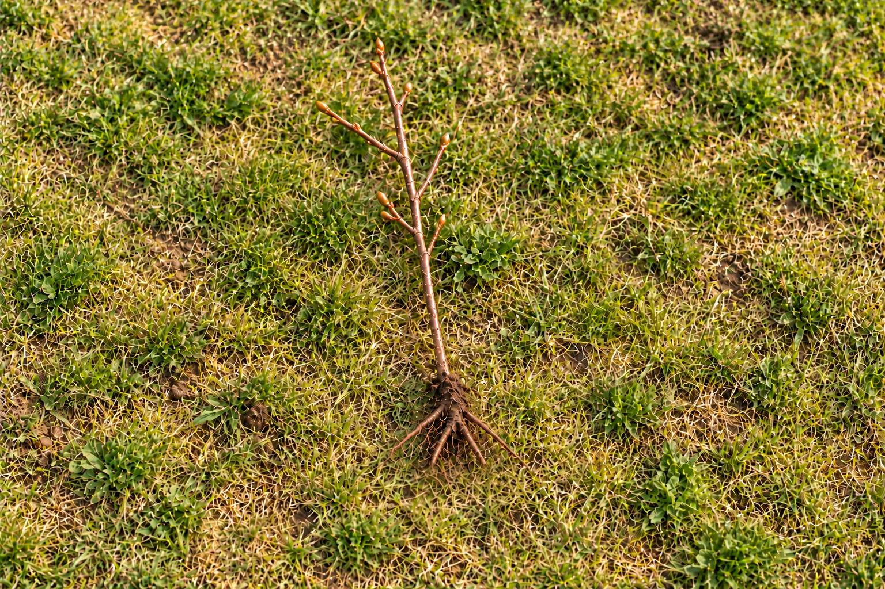

Едногодишен лешников разсад
Младо растение с тънко стъбло и компактна коренова система.
Лешникови фиданки директно от производител в Турия, България. За покупка на лешникови дръвчета уточнете с нас сорта и наличностите.
Едногодишни лешникови фиданки
Едногодишният лешников разсад е младо растение с компактни корени. При избора уточнете желания сорт и дали търсите фиданки за домашна градина или за стопанство.

Цена за брой1,00 €
Посадъчен материалНа гол корен
Изпращаме от 10 до 100 000 броя лешникови фиданки.
Минимално количество: 10 бр. · Максимално количество: 100 000 бр.
Изображенията са илюстративни. Всяко растение има индивидуални размери и форма.
Характеристики на сорта →Цени и поръчки →